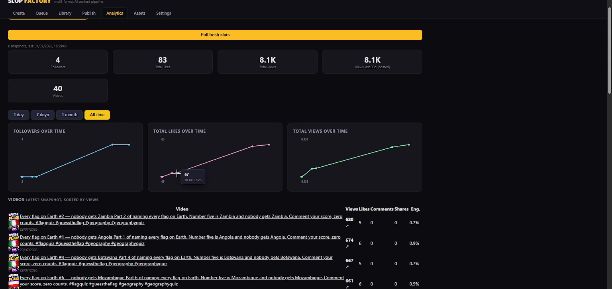
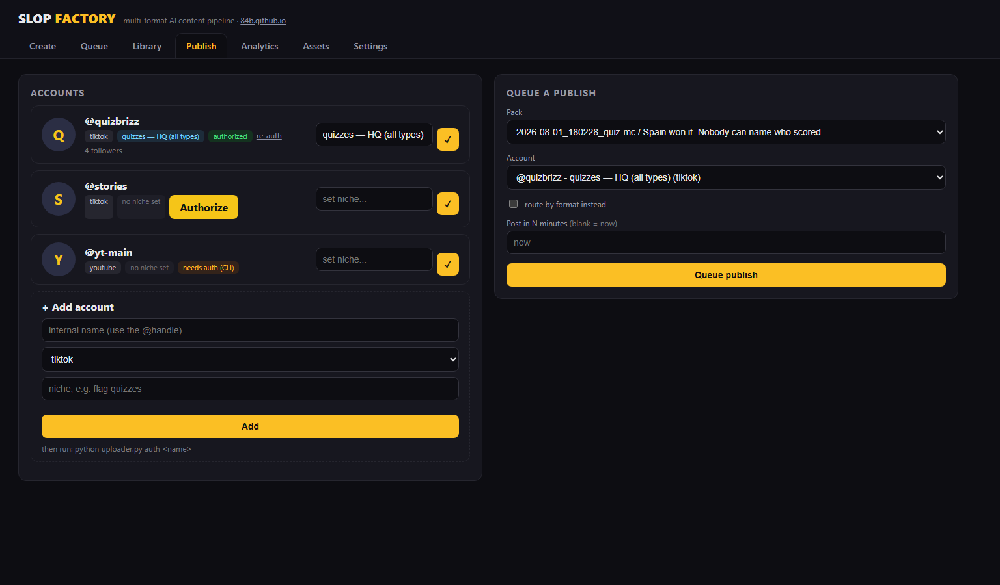

Slop Factory
A personal desktop tool for producing and publishing original short-form quiz videos to the operator's own TikTok account.
What it does
Produces quiz videos
Renders original 9:16 quiz videos — voiceover, synced captions, question cards, countdowns, music and graphics — entirely on the operator's computer.
Publishes via official APIs
Uploads finished videos to the operator's own TikTok account using TikTok's official Content Posting API — as reviewable drafts, or direct posts with caption and cover set.
Tracks performance
A private analytics dashboard reads the account's own follower and per-video statistics to guide what gets made next.
Single operator
Runs locally (the dashboard lives at localhost), connects only to accounts the operator owns via TikTok's official login, and is not offered as a service to anyone else.
How it works
Inside the tool

The analytics view: account growth and per-video performance, read via TikTok's official API for the operator's own account.

The publish view: the operator's own TikTok account, connected through TikTok's official login, with the publishing queue beside it.
Privacy in one line
No analytics trackers, no third-party data, no other users — access tokens stay on the operator's own machine. Full details in the Privacy Policy.